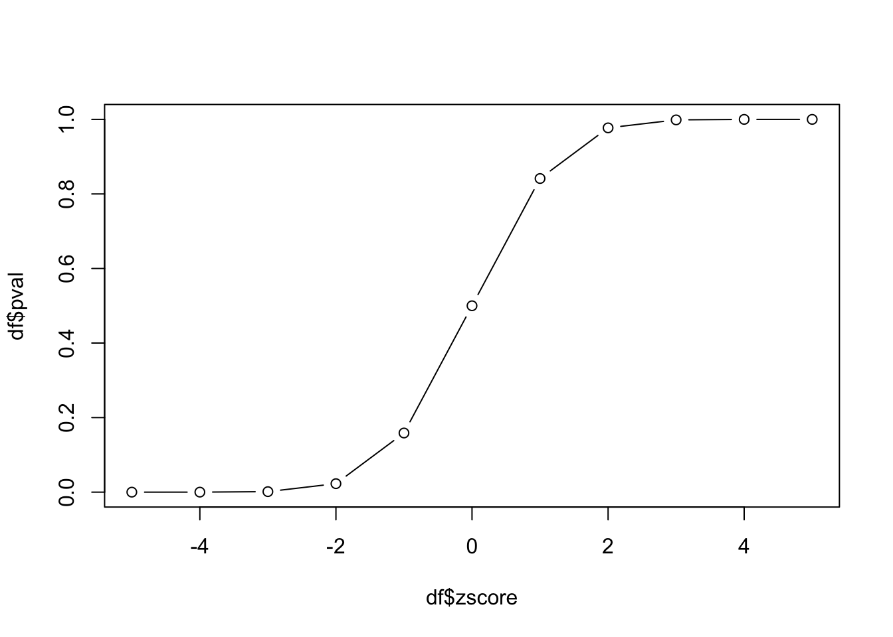
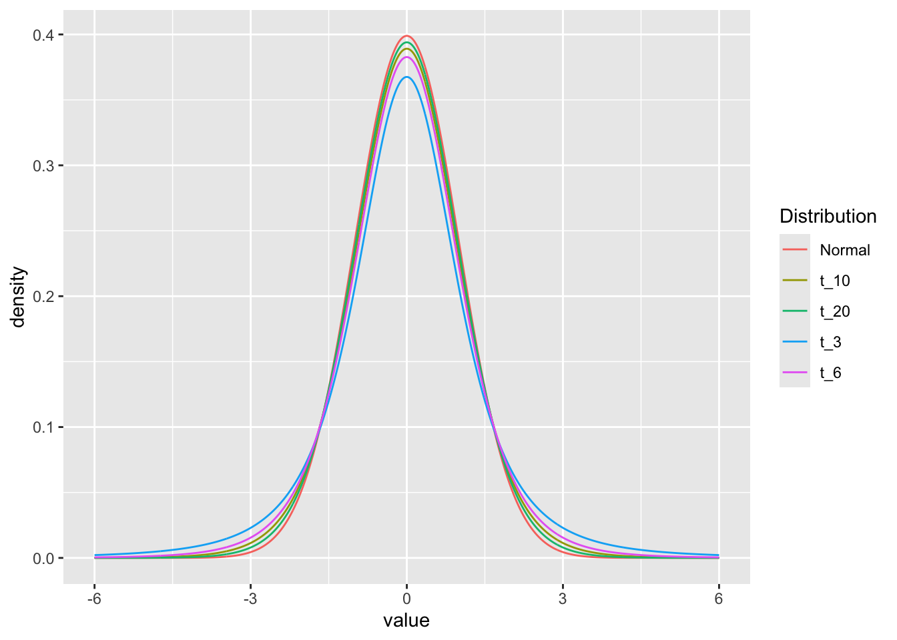
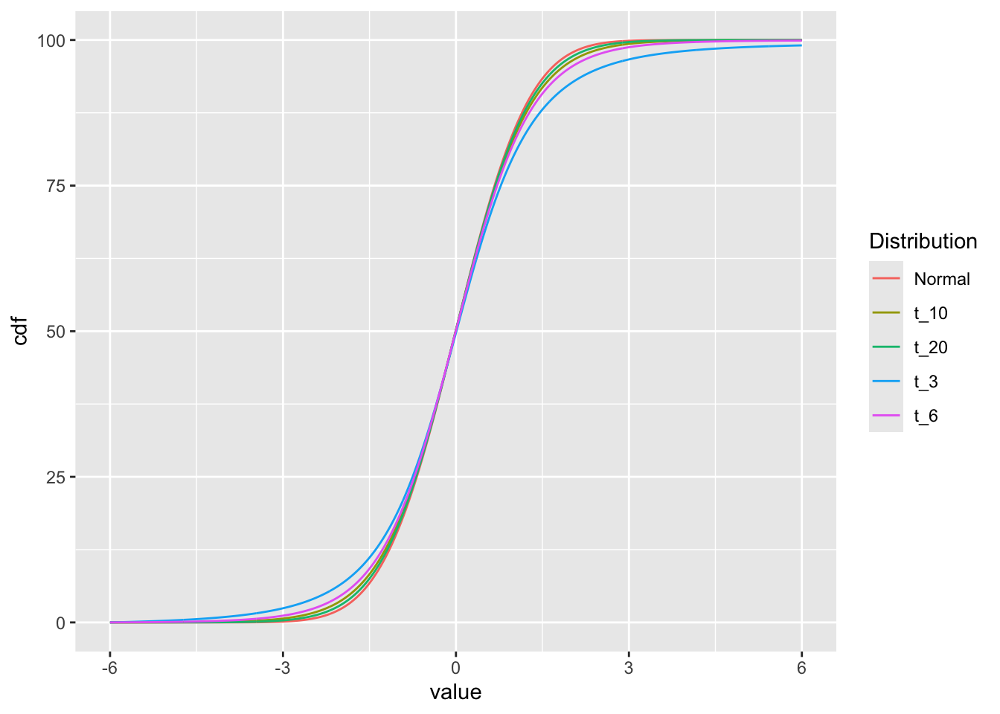

zscore = seq(-5,5,1)14 The t-statistic and t-distribution
14.1 Background
The t-test is a statistical hypothesis test that is commonly used when the data are normally distributed (follow a normal distribution) if the value of the population standard deviation were known. When the population standard deviation is not known and is replaced by an estimate based no the data, the test statistic follows a Student’s t distribution.
T-tests are handy hypothesis tests in statistics when you want to compare means. You can compare a sample mean to a hypothesized or target value using a one-sample t-test. You can compare the means of two groups with a two-sample t-test. If you have two groups with paired observations (e.g., before and after measurements), use the paired t-test.
A t-test looks at the t-statistic, the t-distribution values, and the degrees of freedom to determine the statistical significance. To conduct a test with three or more means, we would use an analysis of variance.
The distriubution that the t-statistic follows was described in a famous paper (Student 1908) by “Student”, a pseudonym for William Sealy Gosset.
14.2 The Z-score and probability
Before talking about the t-distribution and t-scores, lets review the Z-score, its relation to the normal distribution, and probability.
The Z-score is defined as:
\[Z = \frac{x - \mu}{\sigma} \tag{14.1}\]
where \(\mu\) is a the population mean from which \(x\) is drawn and \(\sigma\) is the population standard deviation (taken as known, not estimated from the data).
The probability of observing a \(Z\) score of \(z\) or greater can be calculated by \(pnorm(z,\mu,\sigma)\).
For example, let’s assume that our “population” is known and it truly has a mean 0 and standard deviation 1. If we have observations drawn from that population, we can assign a probability of seeing that observation by random chance under the assumption that the null hypothesis is TRUE.
For each value of zscore, let’s calculate the p-value and put the results in a data.frame.
df = data.frame(
zscore = zscore,
pval = pnorm(zscore, 0, 1)
)
df zscore pval
1 -5 2.866516e-07
2 -4 3.167124e-05
3 -3 1.349898e-03
4 -2 2.275013e-02
5 -1 1.586553e-01
6 0 5.000000e-01
7 1 8.413447e-01
8 2 9.772499e-01
9 3 9.986501e-01
10 4 9.999683e-01
11 5 9.999997e-01Why is the p-value of something 5 population standard deviations away from the mean (zscore=5) nearly 1 in this calculation? What is the default for pnorm with respect to being one-sided or two-sided?
Let’s plot the values of probability vs z-score:
plot(df$zscore, df$pval, type='b')
This plot is the empirical cumulative density function (cdf) for our data. How can we use it? If we know the z-score, we can look up the probability of observing that value. Since we have constructed our experiment to follow the standard normal distribution, this cdf also represents the cdf of the standard normal distribution.
14.2.1 Small diversion: two-sided pnorm function
The pnorm function returns the “one-sided” probability of having a value at least as extreme as the observed \(x\) and uses the “lower” tail by default. Let’s create a function that computes two-sided p-values.
- Take the absolute value of x
- Compute
pnormwithlower.tail=FALSEso we get lower p-values with larger values of \(x\). - Since we want to include both tails, we need to multiply the area (probability) returned by pnorm by 2.
And we can test this to see how likely it is to be 2 or 3 standard deviations from the mean:
twosidedpnorm(2)[1] 0.04550026twosidedpnorm(3)[1] 0.00269979614.3 The t-distribution
We spent time above working with z-scores and probability. An important aspect of working with the normal distribution is that we MUST assume that we know the standard deviation. Remember that the Z-score is defined as:
\[Z = \frac{x - \mu}{\sigma}\]
The formula for the population standard deviation is:
\[\sigma = \sqrt{\frac{1}{N}\sum_{i=1}^{N}({xi - \mu)^2}} \tag{14.2}\]
In general, the population standard deviation is taken as “known” as we did above.
If we do not but only have a sample from the population, instead of using the Z-score, we use the t-score defined as:
\[t = \frac{x - \bar{x}}{s} \tag{14.3}\]
This looks quite similar to the formula for Z-score, but here we have to estimate the standard deviation, \(s\) from the data. The formula for \(s\) is:
\[s = \sqrt{\frac{1}{N-1}\sum_{i=1}^{N}({x_{i} - \bar{x})^2}} \tag{14.4}\]
Since we are estimating the standard deviation from the data, this leads to extra variability that shows up as “fatter tails” for smaller sample sizes than for larger sample sizes. We can see this by comparing the t-distribution for various numbers of degrees of freedom (sample sizes).
We can look at the effect of sample size on the distributions graphically by looking at the densities for 3, 5, 10, 20 degrees of freedom and the normal distribution:
library(dplyr)
library(ggplot2)
t_values = seq(-6,6,0.01)
df = data.frame(
value = t_values,
t_3 = dt(t_values,3),
t_6 = dt(t_values,6),
t_10 = dt(t_values,10),
t_20 = dt(t_values,20),
Normal= dnorm(t_values)
) |>
tidyr::gather("Distribution", "density", -value)
ggplot(df, aes(x=value, y=density, color=Distribution)) +
geom_line()

The dt and dnorm functions give the density of the distributions for each point.
df2 = df |>
group_by(Distribution) |>
arrange(value) |>
mutate(cdf=cumsum(density))
ggplot(df2, aes(x=value, y=cdf, color=Distribution)) +
geom_line()
14.3.1 p-values based on Z vs t
When we have a “sample” of data and want to compute the statistical significance of the difference of the mean from the population mean, we calculate the standard deviation of the sample means (standard error).
\[z = \frac{x - \mu}{\sigma/\sqrt{n}}\]
Let’s look at the relationship between the p-values of Z (from the normal distribution) vs t for a sample of data.
And the p-value if we assume we know the standard deviation:
pnorm(z, lower.tail = FALSE)[1] 0.02428316In reality, we don’t know the standard deviation, so we have to estimate it from the data. We can do this by calculating the sample standard deviation:
14.3.2 Experiment
When sampling from a normal distribution, we often calculate p-values to test hypotheses or determine the statistical significance of our results. The p-value represents the probability of obtaining a test statistic as extreme or more extreme than the one observed, under the null hypothesis.
In a typical scenario, we assume that the population mean and standard deviation are known. However, in many real-life situations, we don’t know the true population standard deviation, and we have to estimate it using the sample standard deviation (Equation 14.4). This estimation introduces some uncertainty into our calculations, which affects the p-values. When we include an estimate of the standard deviation, we switch from using the standard normal (z) distribution to the t-distribution for calculating p-values.
What would happen if we used the normal distribution to calculate p-values when we use the sample standard deviation? Let’s find out!
- Simulate a bunch of samples of size
nfrom the standard normal distribution - Calculate the p-value distribution for those samples based on the normal.
- Calculate the p-value distribution for those samples based on the normal, but with the estimated standard deviation.
- Calculate the p-value distribution for those samples based on the t-distribution.
Create a function that draws a sample of size n from the standard normal distribution.
And give it a try:
zf(5)[1] 0.7406094Perform 10000 replicates of our sampling and z-scoring. We are using the assumption that we know the population standard deviation; in this case, we do know since we are sampling from the standard normal distribution.
And do the same, but now creating a t-score function. We are using the assumption that we don’t know the population standard deviation; in this case, we must estimate it from the data. Note the difference in the calculation of the t-score (ts) as compared to the z-score (z).
If we use those t-scores and calculate the p-values based on the normal distribution, the histogram of those p-values looks like:
Since we are using the normal distribution to calculate the p-values, we are, in effect, assuming that we know the population standard deviation. This assumption is incorrect, and we can see that the p-values are not uniformly distributed between 0 and 1.
If we use those t-scores and calculate the p-values based on the t-distribution, the histogram of those p-values looks like:
Now, the p-values are uniformly distributed between 0 and 1, as expected.
What is a qqplot and how do we use it? A qqplot is a plot of the quantiles of two distributions against each other. If the two distributions are identical, the points will fall on a straight line. If the two distributions are different, the points will deviate from the straight line. We can use a qqplot to compare the t-distribution to the normal distribution. If the t-distribution is identical to the normal distribution, the points will fall on a straight line. If the t-distribution is different from the normal distribution, the points will deviate from the straight line. In this case, we can see that the t-distribution is different from the normal distribution, as the points deviate from the straight line. What would happen if we increased the sample size? The t-distribution would approach the normal distribution, and the points would fall closer and closer to the straight line.
14.4 Summary of t-distribution vs normal distribution
The t-distribution is a family of probability distributions that depends on a parameter called degrees of freedom, which is related to the sample size. The t-distribution approaches the standard normal distribution as the sample size increases but has heavier tails for smaller sample sizes. This means that the t-distribution is more conservative in calculating p-values for small samples, making it harder to reject the null hypothesis. Including an estimate of the standard deviation changes the way we calculate p-values by switching from the standard normal distribution to the t-distribution, which accounts for the uncertainty introduced by estimating the population standard deviation from the sample. This adjustment is particularly important for small sample sizes, as it provides a more accurate assessment of the statistical significance of our results.
14.5 t.test
14.5.1 One-sample
We are going to use the t.test function to perform a one-sample t-test. The t.test function takes a vector of values as input that represents the sample values. In this case, we’ll simulate our sample using the rnorm function and presume that our “effect-size” is 1.
One Sample t-test
data: x[1:5]
t = 0.97599, df = 4, p-value = 0.3843
alternative hypothesis: true mean is not equal to 0
95 percent confidence interval:
-1.029600 2.145843
sample estimates:
mean of x
0.5581214 In this case, we set up the experiment so that the null hypothesis is true (the true mean is not zero, but actually 1). However, we only have a small sample size that leads to a modest p-value.
Increasing the sample size allows us to see the effect more clearly.
t.test(x[1:20])
One Sample t-test
data: x[1:20]
t = 3.8245, df = 19, p-value = 0.001144
alternative hypothesis: true mean is not equal to 0
95 percent confidence interval:
0.3541055 1.2101894
sample estimates:
mean of x
0.7821474 14.5.2 two-sample
Welch Two Sample t-test
data: x and y
t = 3.4296, df = 17.926, p-value = 0.003003
alternative hypothesis: true difference in means is not equal to 0
95 percent confidence interval:
0.5811367 2.4204048
sample estimates:
mean of x mean of y
0.7039205 -0.7968502 14.5.3 from a data.frame
In some situations, you may have data and groups as columns in a data.frame. See the following data.frame, for example
df = data.frame(value=c(x,y),group=as.factor(rep(c('g1','g2'),each=10)))
df value group
1 1.12896674 g1
2 -1.26838101 g1
3 1.04577597 g1
4 1.69075585 g1
5 0.18672204 g1
6 1.99715092 g1
7 1.15424947 g1
8 0.37671442 g1
9 -0.09565723 g1
10 0.82290783 g1
11 -1.48530261 g2
12 -1.29200440 g2
13 -0.18778362 g2
14 0.59205742 g2
15 -2.10065248 g2
16 -0.29961560 g2
17 -0.38985115 g2
18 -2.47126235 g2
19 -0.63654380 g2
20 0.30245611 g2R allows us to perform a t-test using the formula notation.
t.test(value ~ group, data=df)
Welch Two Sample t-test
data: value by group
t = 3.4296, df = 17.926, p-value = 0.003003
alternative hypothesis: true difference in means between group g1 and group g2 is not equal to 0
95 percent confidence interval:
0.5811367 2.4204048
sample estimates:
mean in group g1 mean in group g2
0.7039205 -0.7968502 You read that as value is a function of group. In practice, this will do a t-test between the values in g1 vs g2.
14.5.4 Equivalence to linear model
t.test(value ~ group, data=df, var.equal=TRUE)
Two Sample t-test
data: value by group
t = 3.4296, df = 18, p-value = 0.002989
alternative hypothesis: true difference in means between group g1 and group g2 is not equal to 0
95 percent confidence interval:
0.5814078 2.4201337
sample estimates:
mean in group g1 mean in group g2
0.7039205 -0.7968502 This is equivalent to:
Call:
lm(formula = value ~ group, data = df)
Residuals:
Min 1Q Median 3Q Max
-1.9723 -0.5600 0.2511 0.5252 1.3889
Coefficients:
Estimate Std. Error t value Pr(>|t|)
(Intercept) 0.7039 0.3094 2.275 0.03538 *
groupg2 -1.5008 0.4376 -3.430 0.00299 **
---
Signif. codes: 0 '***' 0.001 '**' 0.01 '*' 0.05 '.' 0.1 ' ' 1
Residual standard error: 0.9785 on 18 degrees of freedom
Multiple R-squared: 0.3952, Adjusted R-squared: 0.3616
F-statistic: 11.76 on 1 and 18 DF, p-value: 0.00298914.6 Power calculations
The power of a statistical test is the probability that the test will reject the null hypothesis when the alternative hypothesis is true. In other words, the power of a statistical test is the probability of not making a Type II error. The power of a statistical test depends on the significance level (alpha), the sample size, and the effect size.
The power.t.test function can be used to calculate the power of a one-sample t-test.
Looking at help("power.t.test"), we see that the function takes the following arguments:
-
n- sample size -
delta- effect size -
sd- standard deviation of the sample -
sig.level- significance level -
power- power
We need to supply four of these arguments to calculate the fifth. For example, if we want to calculate the power of a one-sample t-test with a sample size of 5, a standard deviation of 1, and an effect size of 1, we can use the following command:
power.t.test(n = 5, delta = 1, sd = 1, sig.level = 0.05)
Two-sample t test power calculation
n = 5
delta = 1
sd = 1
sig.level = 0.05
power = 0.2859276
alternative = two.sided
NOTE: n is number in *each* groupThis gives a nice summary of the power calculation. We can also extract the power value from the result:
power.t.test(n = 5, delta = 1, sd = 1,
sig.level = 0.05, type='one.sample')$power[1] 0.4013203
Tip
When getting results from a function that don’t look “computable” such as those from power.t.test, you can use the $ operator to extract the value you want. In this case, we want the power value from the result of power.t.test.
How would you know what to extract? You can use the names function or the str function to see the structure of the result. For example:
names(power.t.test(n = 5, delta = 1, sd = 1,
sig.level = 0.05, type='one.sample'))[1] "n" "delta" "sd" "sig.level" "power"
[6] "alternative" "note" "method" # or
str(power.t.test(n = 5, delta = 1, sd = 1,
sig.level = 0.05, type='one.sample'))List of 8
$ n : num 5
$ delta : num 1
$ sd : num 1
$ sig.level : num 0.05
$ power : num 0.401
$ alternative: chr "two.sided"
$ note : NULL
$ method : chr "One-sample t test power calculation"
- attr(*, "class")= chr "power.htest"Alternatively, we may know a lot about our experimental system and want to calculate the sample size needed to achieve a certain power. For example, if we want to achieve a power of 0.8 with a standard deviation of 1 and an effect size of 1, we can use the following command:
power.t.test(delta = 1, sd = 1, sig.level = 0.05, power = 0.8, type = "one.sample")
One-sample t test power calculation
n = 9.937864
delta = 1
sd = 1
sig.level = 0.05
power = 0.8
alternative = two.sidedThe power.t.test function is convenient and quite fast. As we’ve seen before, though, sometimes the distribution of the test statistics is now easily calculated. In those cases, we can use simulation to calculate the power of a statistical test. For example, if we want to calculate the power of a one-sample t-test with a sample size of 5, a standard deviation of 1, and an effect size of 1, we can use the following command:
sim_t_test_pval <- function(n = 5, delta = 1, sd = 1, sig.level = 0.05) {
x = rnorm(n, delta, sd)
t.test(x)$p.value <= sig.level
}
pow = mean(replicate(1000, sim_t_test_pval()))
pow[1] 0.405Let’s break this down. First, we define a function called sim_t_test_pval that takes the same arguments as the power.t.test function. Inside the function, we simulate a sample of size n from a normal distribution with mean delta and standard deviation sd. Then, we perform a one-sample t-test on the sample and return a logical value indicating whether the p-value is less than the significance level. Next, we use the replicate function to repeat the simulation 1000 times. Finally, we calculate the proportion of simulations in which the p-value was less than the significance level. This proportion is an estimate of the power of the one-sample t-test.
Let’s compare the results of the power.t.test function and our simulation-based approach:
power.t.test(n = 5, delta = 1, sd = 1, sig.level = 0.05, type='one.sample')$power[1] 0.4013203[1] 0.41414.7 Resources
See the pwr package for more information on power calculations.